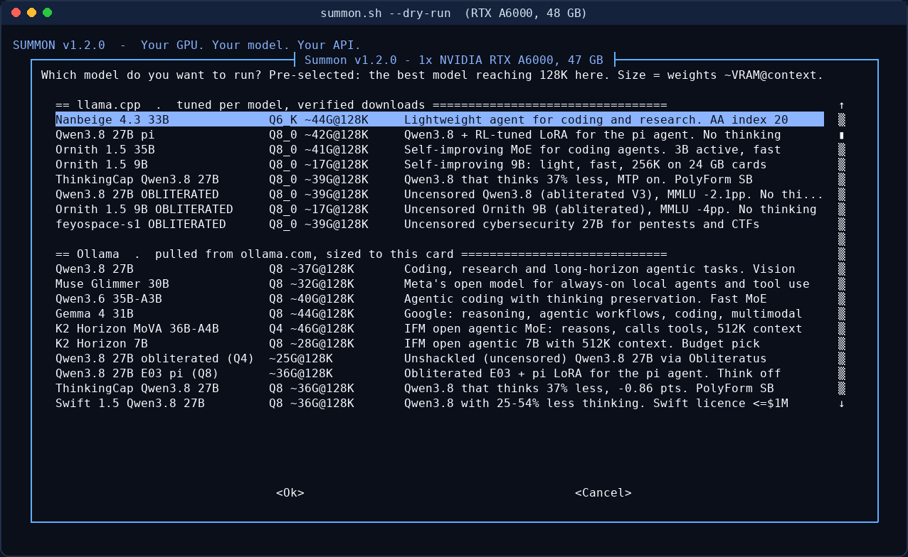
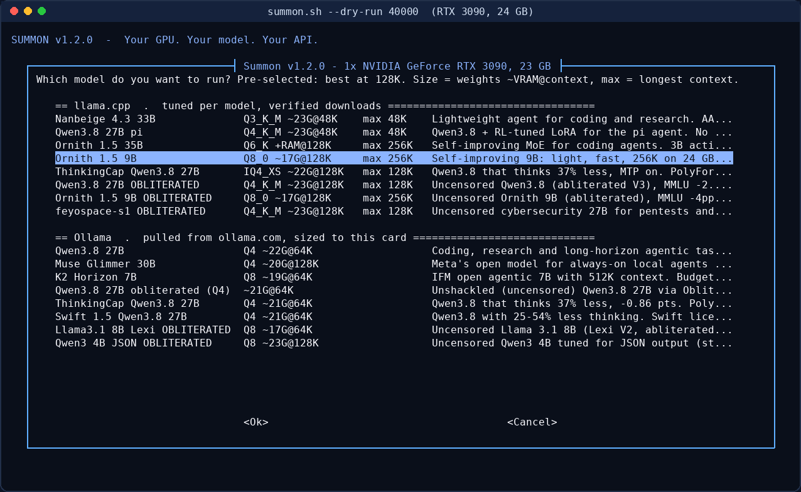
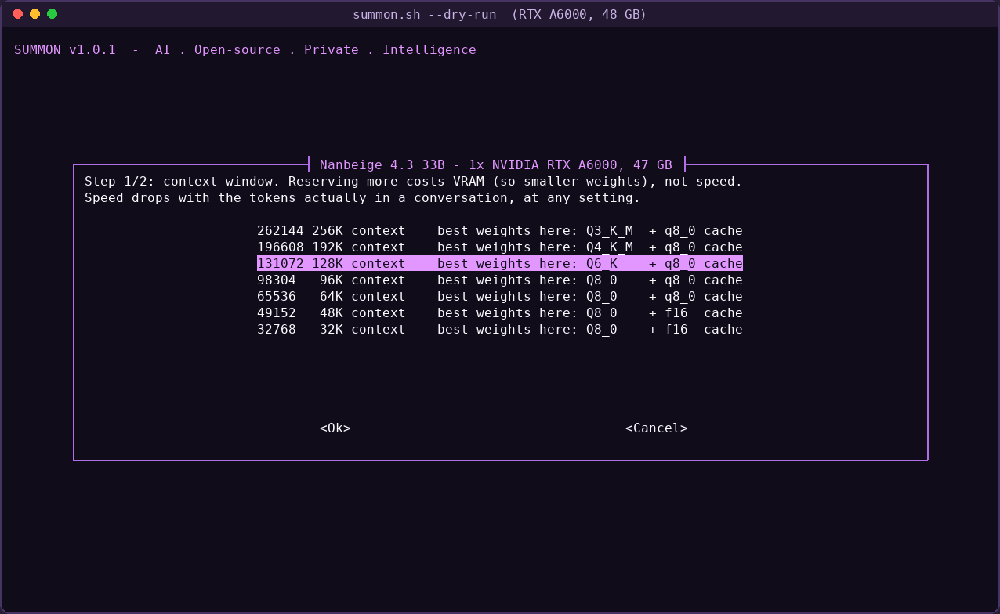
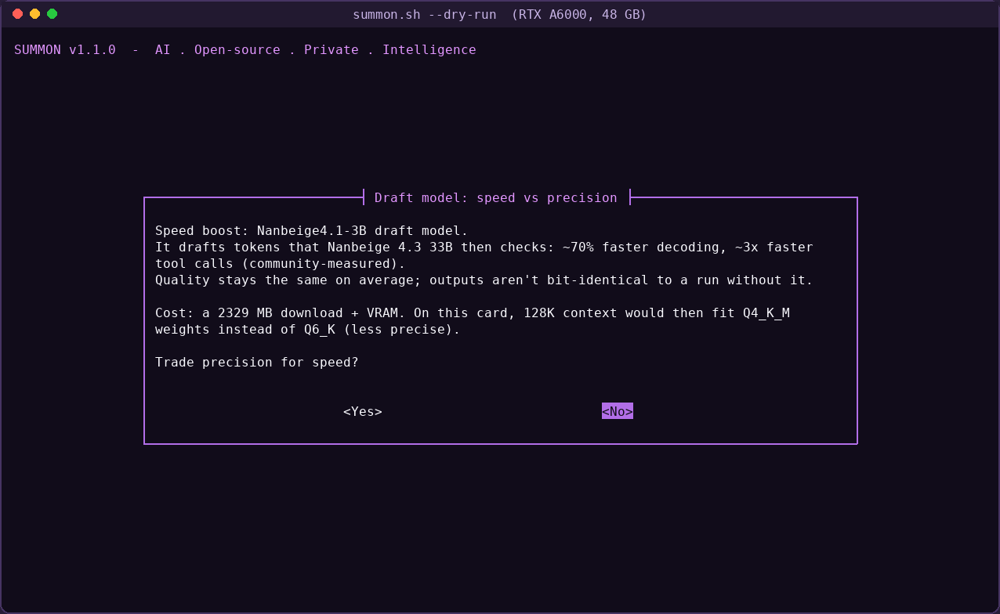
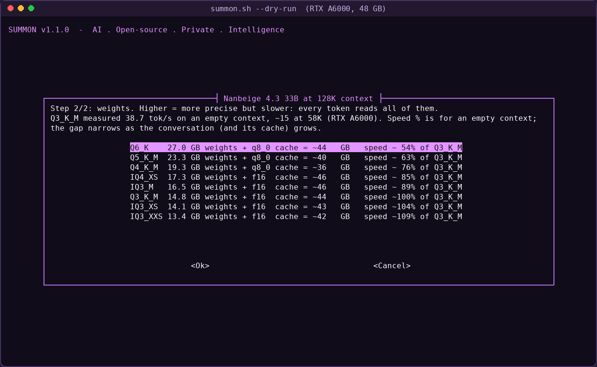
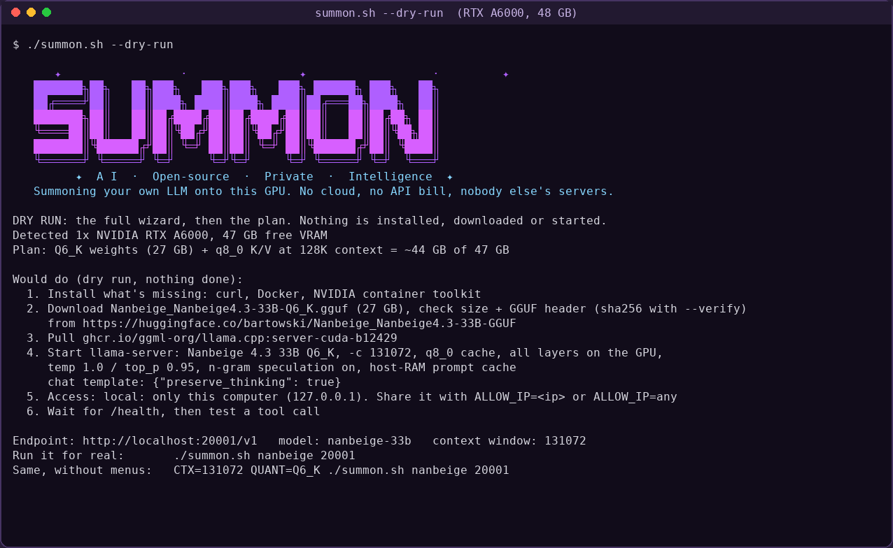
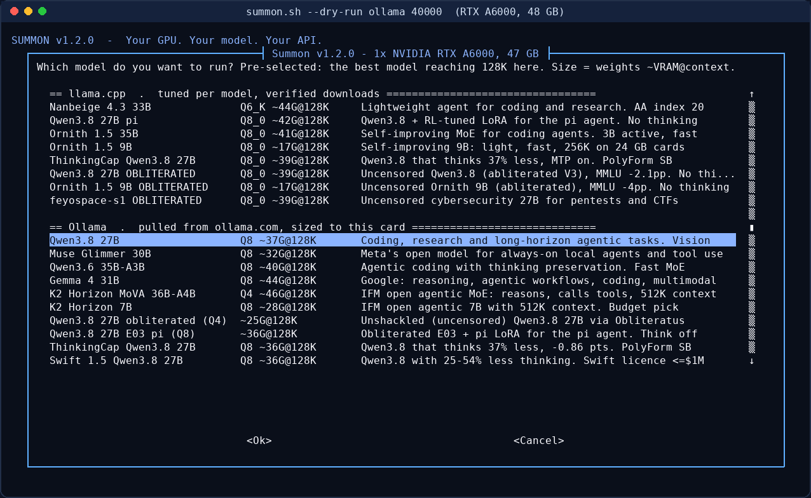
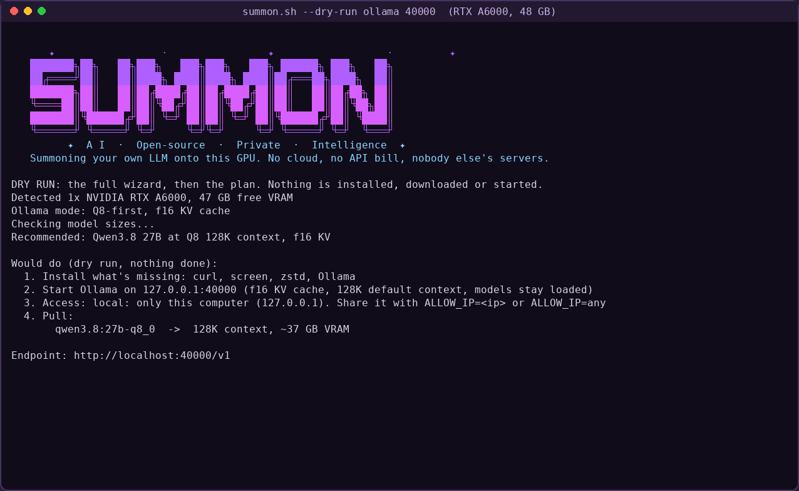
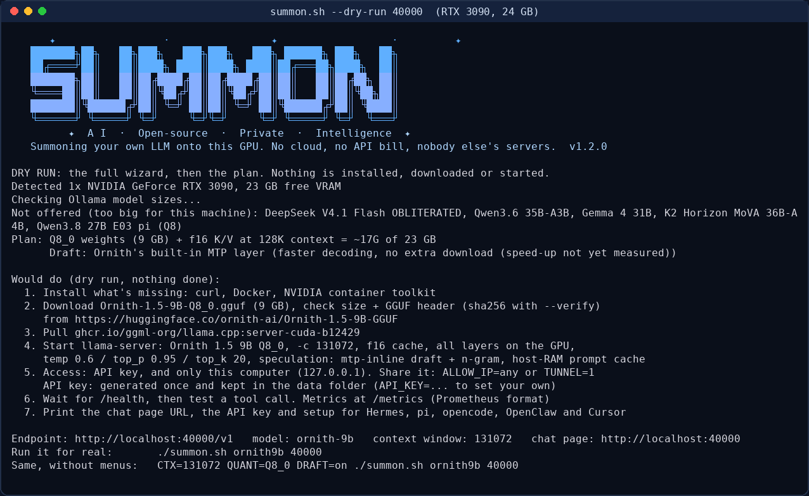

AI · Open-source · Private · Intelligence
v1.1.0 · what's new: draft models, MoE experts in RAM
One command turns your NVIDIA GPU into a private AI with an OpenAI-compatible API. Summon picks the model, weights and context that fit your card, verifies the download, keeps the port private and tests tool calling before it hands you the URL. No cloud. No API bill. Nobody else's servers.
No GPU on this machine? Preview any card: SUMMON_GPU="RTX 3090:24576" ./summon.sh --dry-run.
Prefer to read first? Good habit: summon.sh ·
install.sh · install.ps1.
Free VRAM decides everything: which models fit, how much context, which weights. Nothing is guessed.
The best model that reaches 128K context on your card is pre-selected. Context first, then the most precise weights that still fit.
Resumable downloads, exact byte counts, GGUF header checks, sha256 on request. Every layer stays on the GPU or it fails loudly.
On your own PC it only listens on 0.0.0.0. On a rented pod it's firewalled to the IP you SSH in from. No VPN needed.
The model's own chat template, native tool calls, a host-RAM prompt cache, and speculative decoding with each model's draft: MTP heads, a 3B draft model, n-gram drafts.
Before handing you the URL, it makes a real tool call and checks it comes back in OpenAI format.
| Model | Engine | Good at | 24 GB (RTX 3090 / 4090) | 48 GB (RTX A6000) |
|---|---|---|---|---|
| Nanbeige 4.3 33B | llama.cpp | Agentic coding. Top of the ≤40B class on Artificial Analysis (index 20). | up to 48K | 128K (Q6_K) · 256K (Q3_K_M) |
| Qwen3.8 27B pi | llama.cpp | Qwen3.8 27B plus a LoRA trained with RL to drive the pi coding agent. Thinking off, far fewer tokens. Vendor benchmarks only. | ~48K (Q4_K_M) | 256K with 8-bit weights |
| Ornith 1.5 35B | llama.cpp | Fast MoE, ~3B active per token. Vendor benchmarks only. | 128K, experts in RAM | 256K with 8-bit weights |
| Ornith 1.5 9B | llama.cpp | Fast and light. Vendor benchmarks only. | 256K with 8-bit weights | 256K with 8-bit weights |
| ThinkingCap Qwen3.8 27B | llama.cpp | Qwen3.8 27B that thinks ~37% less, with its built-in MTP head for faster decoding. PolyForm Small Business licence. | 128K (IQ4_XS) | 128K with 8-bit weights |
| Qwen3.8 27B OBLITERATED | llama.cpp | Uncensored Qwen3.8 (OBLITERATUS abliteration, vendor MMLU -2.1pp). Thinking off; served with Qwen3.8's own template so tool calls work. | 128K (Q4_K_M) | 256K with 8-bit weights |
| Ornith 1.5 9B OBLITERATED | llama.cpp | Uncensored Ornith 9B (vendor MMLU -4pp). Thinking off. | 256K with 8-bit weights | 256K with 8-bit weights |
| feyospace-s1 OBLITERATED | llama.cpp | Uncensored ~28B tuned for cybersecurity: pentests, CTFs, vulnerability research. Run its tools in a sandbox. | 128K (Q4_K_M) | 256K with 8-bit weights |
| DeepSeek V4.1 Flash OBLITERATED | llama.cpp | Uncensored 748B MoE (refusals reduced, not removed; MMLU 83.6%). 237 GB download. Needs a 96 GB card + ~130 GB free RAM, or ~160 GB of VRAM across cards. | not offered | not offered |
| Ollama models | Ollama | Qwen3.8 27B, Qwen3.6 35B-A3B, Gemma 4 31B, K2 Horizon, Muse Glimmer… | Qwen3.8 27B at 64K | most at 128K, 8-bit |
All of them are in one menu, sized live to your card. Every model serves an OpenAI-compatible API: point any client (pi, Continue, Open WebUI, your own code) at
http://localhost:PORT/v1. One engine runs at a time; starting one stops the other.
Real screens from ./summon.sh --dry-run: the actual script and whiptail menus, nothing installed.







./summon.sh ollama: the same menu, Qwen3.8 27B pre-selected (ranked with independent benchmarks).

http://localhost:PORT/v1 (rented pod: http://<pod-ip>:PORT/v1), any API key, and set its context window to the number Summon prints.~/.summon/summon.sh again.~/.summon/summon.sh --lock. Share on your LAN: ALLOW_IP=192.168.1.0/24 ~/.summon/summon.sh.~/.summon/summon.sh --uninstall. All options: --help.NVIDIA with 24 GB+ for the long-context models (RTX 3090 / 4090 / A6000 / 6000 Ada). 48 GB unlocks Nanbeige at 128–256K.
Ubuntu or Debian (apt), NVIDIA driver installed, root or sudo. Summon installs Docker and the NVIDIA container toolkit if missing.
Windows 10 21H2+ or 11 with a current NVIDIA driver. The PowerShell installer sets up WSL 2 + Ubuntu and runs Summon there.
Honest notes: Summon is young. Its Nanbeige llama.cpp setup has served real agent work on rented RTX A6000 pods; the full wizard, the Windows/WSL path and the Ornith models have only been tested with dry runs and simulated GPUs so far. Ornith's benchmarks are the vendor's own. Downloads are 6–38 GB. Piping a script into your shell gives it root: read it first if that matters to you (it should).